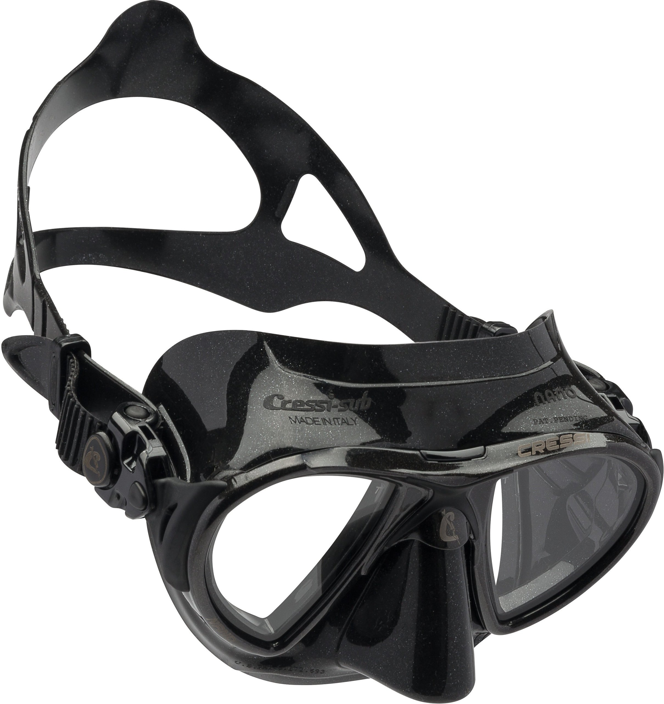
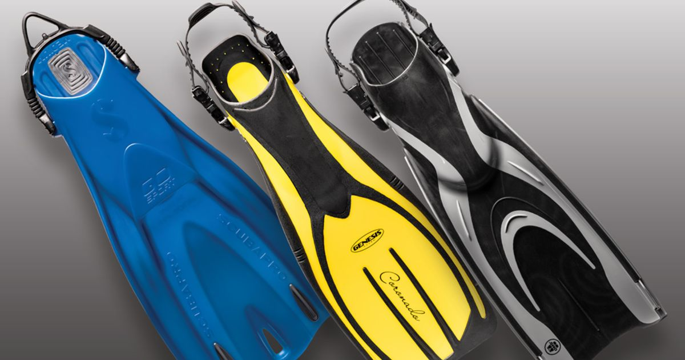

Freediving is the practice of holding your breath when diving underwater without the use of breathing equipment, such as a scuba tank.
Freediving, despite being classified as an extreme sport is actually a very relaxing, calm sport that can be
enjoyed by people of all ages and abilities.
The sport encourages participants to progress at their own
speed
with focus on the experience of freediving rather than any goal or target to reach.
Freediving, for many,
becomes a natural way of life with closer attention being paid to diet, exercise, relaxation and mental attitude
– all important components of healthy living in our fast-paced environment.
For even more health benefits
of
freediving, check this article.
Mask
Fins
